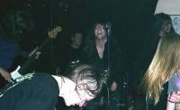

Sabbra Cadabra Would Like To Thank…
- Ritchie Haddlesey
Ritchie has worked and supported the band since its early days and is now effectively the fifth band member. He has continued to follow the band and take care of all live sound duties regardless of where or when we are playing - often for very little compensation! Here's to you mate!
- Rik Cook
For being way too helpful and the ultimate rock animal. His many talents include helping us to set up this web site, doing a great job behind the sound desk (live), removing roving drunks from the stage and being a front line mosher! Rik also runs a fantastic up and coming, cock rockin' band in the Cambridge area called The Peace. The pretentious so-and-so also has his own site now.
- Tom Toomey
For being a great friend and an awesome guitarist. Tom's constant encouragement during the early days of setting up the band was often all that came between a great band and a collapsed "nice idea". Tom organised the Haselbury Mill festival in aid of the Music For Africa Appeal, a charity that he started and runs in his own time. What a nice chap! Also, check out his fantastic Santana tribute band Jingo.
- Steve Bruce
Top graphics artist Steve Bruce provided some superb graphics for the band, including the band logo. Check out his work for the band or visit his home page.
- Westside Music
The only place to buy guitars (and just about all other musical equipment).
- Fritz and Jan
For a damn fine cup of tea and compliments in the van after Haselbury Mill!
To all those mentioned above and anyone else we have forgotten (please let us know!), many thanks to you all from Sabbra Cadabra—your kindness and generosity has not passed unnoticed (remind us of that next time you see us at the bar!).